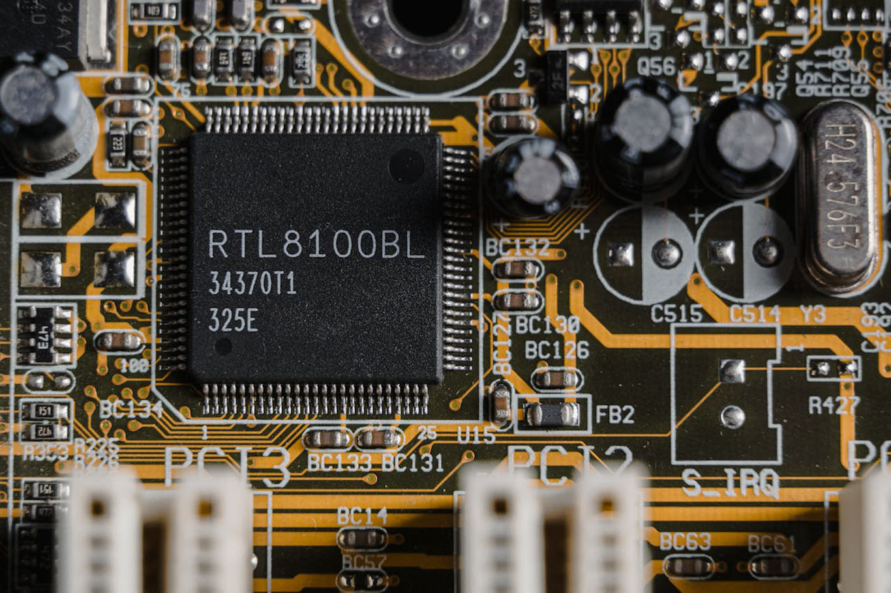

Nossos Cursos
No IPIAL não fazemos distinção de alunos com etnias ou condições físicas diferentes, nós acreditamos que todo mundo tem direito a uma boa educação. No IPIAL, são lecionadas as aulas dos seguintes ccursos técnicos:
- Construção civil (Desenhador Projectista, Tecnico de Obras)
- Informática (Tecnico de Informática)
- Electrecidade (Tecnico de Energia e Instalações)
- Electrecidade e Telecomunicações
Construção Civil
O curso de Construção Civil abrange áreas práticas e teórica relacionadas ao planejamento, desenho técnico e execução de projetos de construção. Esse curso é ideal para quem deseja atuar no setor da construção civil combinando conhecimentos de engenharia básica, arquitetura e design.
O que o aluno vai aprender?
Neste curso o aluno vai aprender:
- Fundamentos da construção civil
- Leitura e interpretação de projectos
- Desenho Técnico e Projetos
- Planejamento e Gestão de Obras
- Normas de construação
- Estruturas e Sistemas construtivos
- Modelagem 3D e Renderização
- Técnicas de Design e Estética
- E muito mais
Capacidades adquiridas ao final do curso
O aluno no final do curso sera capacitado para:
- Criar projetos arquitetônicos e estruturais
- Usar softwares de desenho e modelagem
- Planejar e gerenciar obras
- Interpretar e adaptar projetos.
- Trabalhar com equipes multidisciplinares
- Criar representações visuais de projetos
- Garantir conformidade legal e técnica
Esse curso habilita o aluno atuar como desenhista projetistatécnico em construção civil, auxiliar de arquitetos engenheiros, ou mesmo como uprofissional autônomo, elaborando projetos e acompanhando obras. E também oferece uma base sólida para avançar em áreas especializadas, como engenharia civil, arquitetura ou design de interiores.


Electrecidade
O curso de eletricidade, abrange diversos tópicos relacionados ao funcionamento, instalação, manutenção e reparação de sistemas elétricos. Abaixo está um resumo do que normalmente se aprende e as competências adquiridas:
O que o aluno vai aprender?
Neste curso o aluno aprende:
- Fundamentos de Eletricidade
- Leitura e Interpretação de Projetos e Circuitos Elétricos
- Eletricidade Residencial
- Eletricidade Industrial
- Instalações de Equipamentos
- Manutenção e Reparação
- Sistemas de Energia
- Electronica Analogica e Digital
- Segurança e Normas
- E muito mais
Capacidades adquiridas
ao
final do curso
O aluno estará apto para:
- Realizar instalações elétricas em residências, comércios e indústrias.
- Interpretar e montar circuitos elétricos e sistemas electricos
- Trabalhar com equipamentos de medição para detectar falhas e otimizar o funcionamento.
- Manuenção e reparação de equipamentos electrônicos.
O aluno após a sua formação esta rá capacitado para para desenpenhar diversas funções tecnicas no mercado de trabalho, como:
- Indúdtrias
- Empresas de Telecomunicações
- Automação Residencial e comercial e muito mais.
Além de abrir portas para cursos mais avançados, como eletrônica, automação ou energias renováveis.


Electronica e Telecomunicações
O curso de Eletrônica e Telecomunicações prepara os alunos para compreender, projetar, montar e reparar circuitos e dispositivos eletrônicos, combinando teoria e prática. A formação geralmente engloba conceitos fundamentais e aplicação prática em diversos ramos da eletrônica.
O que o aluno vai aprender?
Neste curso o aluno vai aprender:
- Fundamentos da Electrônica
- Sistemas Digitais
- Telecomunicações e Tecnologias de Telecomunicações
- Componentes Eletrônicos
- Circuitos Eletrônicos
- Eletrônica Digital
- Microcontroladores e Programação
- Sistemas de Comunicação e Controle
- E muito mais
Capacidades adquiridas
ao
final do curso
O aluno estará capacitado para:
- Projetar circuitos eletrônicos
- Montar e reparar dispositivos eletrônicos
- Trabalhar com microcontroladores
- Desenvolver soluções tecnológicas
- Manusear instrumentos de teste
- Criar representações visuais de projetos
- Atuar em manutenção e assistência técnica
- Implementar sistemas de automação
- Seguir normas técnicas e de segurança
Esse curso é um ponto de partida para atuar em áreas como manutenção eletrônica, automação, telecomunicações e desenvolvimento de dispositivos eletrônicos. Ele também oferece uma base sólida para estudos avançados em engenharia elétrica, robótica ou sistemas embarcados.



Informática
O curso de Informática é projetado para ensinar habilidades relacionadas ao uso de computadores, software, hardware e tecnologia da informação, como também conceitos mais avançados como programação, e redes.
O que o aluno vai aprender?
Neste curso o aluno vai aprender:
- Fundamentos de Informática
- Pacote Office e Ferramentas de Produtividade
- TDigitação e Ergonomia
- Manutenção de Computadores
- Internet e Comunicação
- Introdução à Programação em diversas linguagens de programação
- Introdução às Redes
- Segurança da Informação
- E muito mais
Capacidades adquiridas
ao
final do curso
O aluno estará capacitado para:
- Trabalhar com ferramentas de produtividade (pacote Office)
- Realizar manutenção de computadores e suporte técnico
- Navegar e utilizar a internet com eficiência
- Aplicar boas práticas de segurança digital
- Desenvolver sistemas informaticos
- Trabalhar com diferentes topologias de redes de computadores
- Criar conteúdos digitais (design gráfico básico, apresentações)
- Trabalhar em equipe usando ferramentas tecnológicas
Este curso pode ser uma base para se especializar em áreas mais técnicas ou avançadas, como desenvolvimento de software, análise de dados, ou infraestrutura de TI.